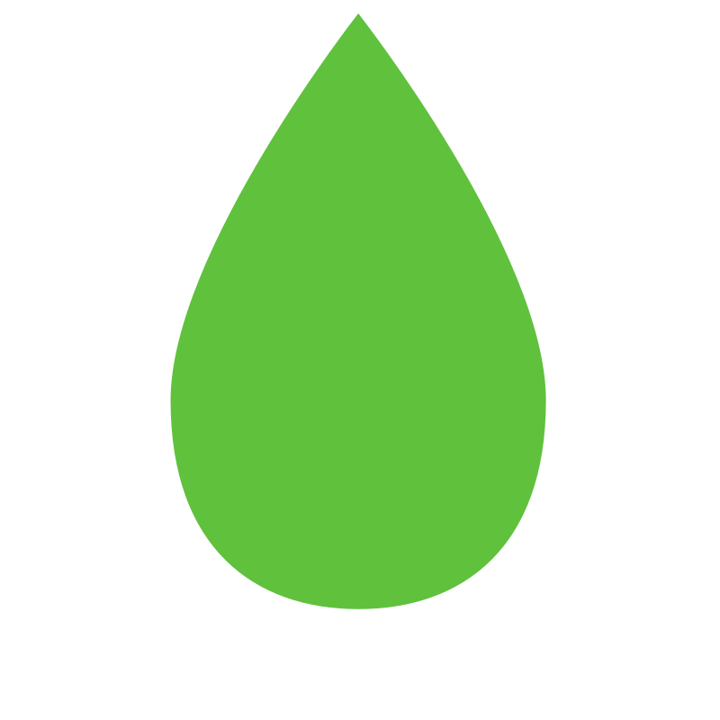
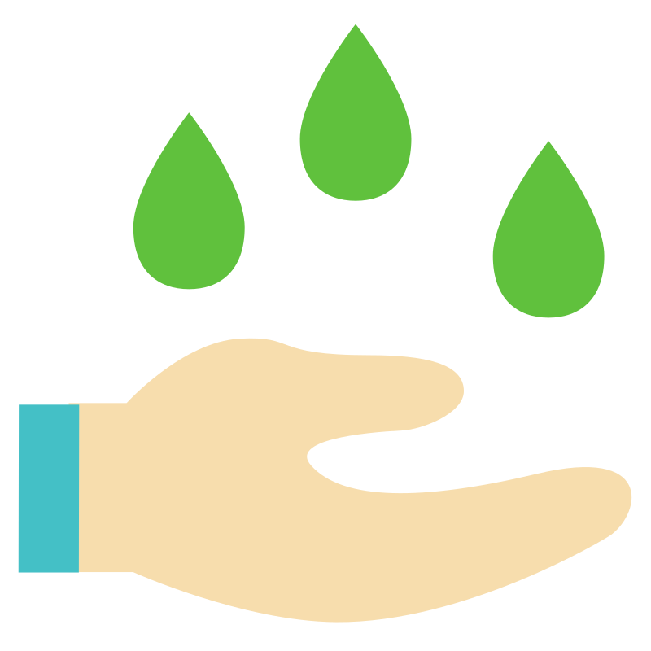

Some basic shit about grass

Grass is everywhere
Did you know that grass covers 40% of earth surface? They are everywhere, you probably have some grass in your backyard to touch.
Grass feeds the world
Wheat, rice, corn... those are all grass. You need to eat it, you need to touch it. So do it, touch it.

You can step on it
Unlike humans, and your computer, you can step on grass! They can survive, they are emotionally resilient, as you should be.

Grass improves your mood
Maybe is something primordial from our days at the grassy savannahs, but seeing grass does wonders to your mood.